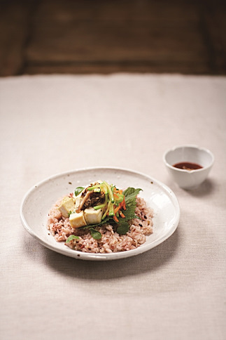

두부비빔밥
갓 지은 밥이 제일 맛있지만 식사 때마다 밥을 새로 하는 것은 번거로운 일이 될 수 있다. 비빔밥은 갓 지은 밥이 아니어도 맛깔스럽게 먹을 수 있고 다양한 채소를 곁들일 수 있어 간단한 일품요리로 좋다. 또한, 콩에는 유방암, 자궁내막암 등에 예방 효과가 있는 것으로 알려진 에스트로겐과 비슷한 식물성 호르몬이 많이 들어 있는데, 이 콩을 원료로 한 두부를 곁들이면 영양적으로도 풍부한 메뉴가 완성된다.
재료
두부 1모, 깻잎 5장, 애호박 ⅓개, 표고버섯 2개, 다진 마늘 1작은술, 참기름 2큰술, 소금 약간,
밑간양념 : 간장 2작은술, 다진 마늘 ½작은술, 참기름 약간
볶은 고추장 : 고추장 ½컵, 물 ⅓컵, 설탕 2큰술, 참기름 1큰술
만드는 법